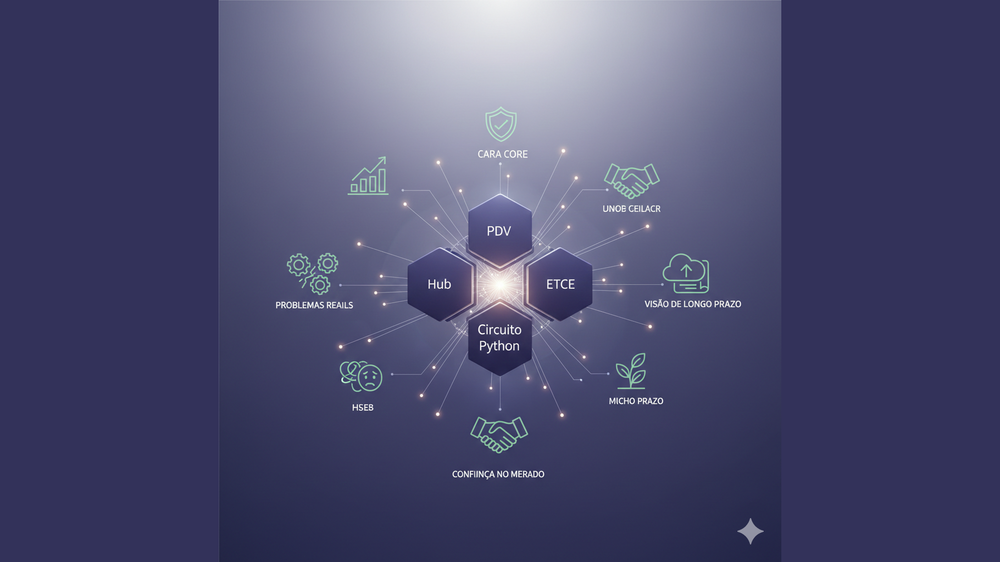

Construindo Produtos com Propósito: A Filosofia por Trás do Portfólio da Cara Core
Introdução: Mais Que um Conjunto de Produtos
Um portfólio de software pode ser uma coleção de ofertas desconectadas — cada produto com seu roadmap, seu público e sua história. Ou pode ser o reflexo de uma filosofia: escolhas conscientes sobre para quem construir, como encaixar as peças e por que certos problemas valem o investimento.
Na Cara Core, PDV, Hub, Reino OIDC, ETE/Minerador 4.0 e Circuito Ferradura não nasceram por acaso. Nasceram de um mesmo critério: resolver problemas reais em nichos onde a oferta genérica falha, com produtos modulares que o cliente pode adotar sem comprar o pacote inteiro. Esse critério é o fio condutor que une o portfólio.
Este artigo explica o que une esses produtos, como a filosofia modular se traduz em desenho e negócio, e por que essa coerência gera confiança no mercado.
1. O Que Une PDV, Hub, OIDC, ETE e Circuito Ferradura
À primeira vista, ponto de venda, logística, identidade digital, hidrometalurgia e curso de programação parecem mundos distantes. O que os une é o tipo de problema que cada um ataca e a forma como são entregues.
Problema real, nicho definido: cada produto nasceu de uma demanda concreta. PDV para varejo que precisa sobreviver à reforma tributária e ao Pix Split. Hub para automação e última milha, incluindo cenários como a Tia Sócia. Reino OIDC e Área 51 para identidade e autenticação enterprise no Brasil. ETE/Minerador 4.0 para simulação e metodologia em processamento mineral. Circuito Ferradura para educação em programação com foco em inclusão. Nenhum deles é "um pouco de tudo"; cada um tem escopo claro.
Propósito comum: servir quem está subatendido pelo software genérico — varejista, operador logístico, empresa média que precisa de identidade digital, engenheiro de processo, educador. O cliente que a Cara Core imagina é aquele que precisa de solução que fale a língua do negócio e da regulamentação local.
Modularidade: o cliente pode adotar um produto sem ser obrigado a comprar os outros. PDV e Hub podem conversar; identidade pode servir vários produtos; mas a compra é por necessidade, não por pacote fechado. Esse desenho é intencional.
2. A Filosofia Modular
Modularidade não é só arquitetura técnica. É escolha de negócio: em vez de um monolito que faz tudo, oferecemos blocos que se encaixam. Cada bloco resolve um problema específico; a combinação fica a cargo do cliente e do contexto.
Isso exige disciplina. Escopo bem definido, interfaces estáveis, documentação que permita integração. Em troca, o cliente não paga por o que não usa, não fica preso a um ecossistema fechado e pode evoluir aos poucos — começar com PDV, depois adicionar Hub; ter identidade (OIDC) servindo vários sistemas.
A filosofia modular também protege a própria empresa: evita a tentação de "fazer um pouco de tudo" e mantém o foco em poucos eixos nos quais vale a pena aprofundar. O portfólio cresce por coerência, não por acúmulo.
3. O Foco em Problemas Reais
Cada produto do portfólio está amarrado a um domínio concreto:
Varejo
PDV preparado para CBS, IBS, Pix Split e prazos da reforma tributária 2026–2033. O problema real é o varejista que não pode esperar o ERP global se adaptar; precisa de ferramenta que já nasça alinhada à lei brasileira.
Identidade e autenticação
Reino OIDC e Suporte Área 51 atendem empresas que precisam de OAuth 2.1, OIDC, PKCE e single sign-on sem depender apenas de fornecedores gigantes. O problema real é compliance, LGPD e controle sobre o fluxo de identidade.
Automação e última milha
Hub cobre gestão logística, e-commerce e cenários em que o operador (como a Tia Sócia) faz a ponte entre o sistema e quem está na ponta. O problema real é conectar pessoas e processos que a solução genérica não modela.
Educação
Circuito Ferradura leva programação a escolas e grupos que precisam de material em português, com licença adequada (gratuita para uso pessoal; paga para uso em sala de aula). O problema real é democratizar acesso à formação técnica.
Deep tech e processamento
ETE e Minerador 4.0 tratam de hidrometalurgia, simulação e metodologia aplicada a mineração e refino. O problema real é ferramenta que o engenheiro de processo consiga usar e evoluir.
Em todos os casos, o foco está no problema do cliente, não na tecnologia pela tecnologia.
4. A Visão de Futuro da Empresa
A Cara Core não pretende virar um conglomerado de produtos desconectados. A visão é manter um ecossistema coerente: poucos eixos, bem aprofundados, com matriz (site) e lojas alinhadas, documentação clara e suporte próximo. Novos produtos ou serviços — como o RU Soberano na "garagem" — entram quando se encaixam nessa lógica: problema real, nicho definido, modularidade possível.
O horizonte é de longo prazo: ser reconhecida como referência em cada nicho em que atua. Não como a maior em tamanho, mas como a que entrega solução que encaixa, evolui com o cliente e mantém coerência entre o que se promete e o que se entrega.
5. Como Isso Cria Confiança no Mercado
Coerência gera credibilidade. Quando o cliente vê que PDV, Hub, OIDC, ETE e Circuito Ferradura seguem a mesma lógica — propósito claro, escopo definido, modularidade —, entende que não está comprando produto solto, e sim parte de um ecossistema pensado. Isso reduz desconfiança: a empresa não está testando moda; está investindo em poucos temas com critério.
Além disso, a filosofia modular e o foco em problemas reais facilitam o diálogo. O cliente sabe com quem está falando e o que pode esperar. A empresa sabe para quem está construindo. Esse alinhamento é a base da confiança — e da reputação no médio e longo prazo.
Conclusão: Portfólio Como Espelho da Filosofia
Construir produtos com propósito significa escolher o que entra no portfólio e por quê. Na Cara Core, essa escolha se traduz em cinco pilares visíveis — PDV, Hub, OIDC, ETE, Circuito Ferradura — e em outros que se somam quando fazem sentido ao mesmo critério. O que une todos é a filosofia: problema real, nicho definido, modularidade e visão de longo prazo. É assim que o portfólio vira espelho da empresa — e que a empresa ganha confiança no mercado.
Hashtags
Contato
- E-mail: suporte@caracore.com.br
- Site: www.caracore.com.br
- LinkedIn: Cara Core Informática
Conecte-se conosco no LinkedIn para mais conteúdos sobre portfólio, filosofia modular e produtos com propósito.
Seguir no LinkedIn
Artigo publicado em 28 de abril de 2026
© 2026 Cara Core Informática. Todos os direitos reservados.